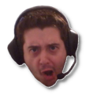
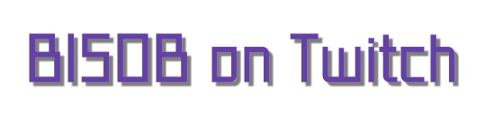

  | ||
| Get the FrankerFaceZ plugin for your browser and enjoy a wider range of emotes! Chat Commands: Get a quote with !quote Add a quote with !addquote "quotehere" (mods only) Get a list of sfx to play with !sfx Link to the soundboard with !soundboard Start a new poll with !poll Get some important links with !links Bored? Try !imbored | ||